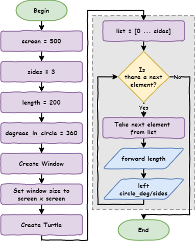

Python Turtle¶
Lesson 3
Topics
storing values in variables
when and how to use variables
screen coordinates
how to use coordinates to move the turtle
how to move the turtle without drawing a line
Part 1¶
Variables
Conventional range¶
How to use range in a more conventual way.
Previously, we would use the following code to print four numbers.
for index in range(1, 5):
print(number)
What is index?
index→ programming convention that represents a counter in a loop
If you run the code you get the following.
1
2
3
4
Only concerned about the number of iterations
for index in range(0, 4):
print(number)
Will produce:
0
1
2
3
Still has four iterations → starts counting at 0
If range function not given a starting number → start at 0
for index in range(4):
print(number)
Will produce:
0
1
2
3
The way that range is conventionally used.
Replace magic numbers¶
A solution for lesson 2 exercise 1
New file lesson_3_pt_1.py → enter the code
import turtle
window = turtle.Screen()
window.setup(500, 500)
my_ttl = turtle.Turtle()
for index in range(4):
my_ttl.forward(100)
my_ttl.left(90)
Draw a triangle with side length 200 → what do we need to change?
import turtle
window = turtle.Screen()
window.setup(500, 500)
my_ttl = turtle.Turtle()
for index in range(3):
my_ttl.forward(200)
my_ttl.left(120)
What do the changed numbers represent?
4→3representing the number sides.100→200representing the length of the sides.90→120representing the degrees the Turtle has to turn.
To draw a hexagon → same three numbers change
These numbers → magic numbers
A magic number → hard coded value in the program
Magic numbers → not good
No explicit meaning → what do
3,200and120mean?Changing 1000 squares into triangles → 3000 edits.
Replace magic numbers with labels called variables
import turtle
sides = 3
length = 200
degrees = 120
window = turtle.Screen()
window.setup(500, 500)
my_ttl = turtle.Turtle()
for index in range(sides):
my_ttl.forward(length)
my_ttl.left(degrees)
Predict and run the code
sides,lengthanddegreesare all variables → let’s investigate

sides = 3creates variablesides→ assigns3to itlength = 200creates variablelength→ assigns200to itdegress = 120creates the variabledegrees→ assigns120to itfor i in range(sides):substitutessideswith3→for index in range(3)my_ttl.forward(length)substituteslengthwith200→my_ttl.forward(200)my_ttl.left(degrees)substitutesdegreeswith120→my_ttl.left(120)
Python naming rules¶
Very specific rules variable names:
can only contain letters, numbers and the
_charactercannot contain spaces
cannot start with a number
are case sensitive (eg.
ageis not the same asAge)
Using variables → copy the for loop as many times as we want
Values for sides, length, and degrees → use the values assigned to them
Single point of truth
Changing the value of sides → changes the value for uses of sides
Same for length and degrees.
Change lesson_3_pt_1.py to draws a hexagon with length of 100
import turtle
sides = 6
length = 100
degrees = 60
window = turtle.Screen()
window.setup(500, 500)
my_ttl = turtle.Turtle()
for index in range(sides):
my_ttl.forward(length)
my_ttl.left(degrees)
No ‘meat space’ calculations¶
How did we know that degrees needed to be 60?
Worked it out in your head or used a calculator?
Flaws on both:
head calculations can be incorrect
getting a calculator is a waste of time
Use Python to do the calculations.
Python Arithmetic Operators¶
Operation |
Symbol |
|---|---|
Addition |
+ |
Subtraction |
- |
Multiplication |
* |
Division |
/ |
Modulus |
% |
Exponentiation |
** |
Floor Division |
// |
Degrees is 360 divided by number of sides (sides)
In code → degrees = 360 / sides
import turtle
sides = 6
length = 100
degrees = 360 / sides
window = turtle.Screen()
window.setup(500, 500)
my_ttl = turtle.Turtle()
for index in range(sides):
my_ttl.forward(length)
my_ttl.left(degrees)
Remove unnecessary variables¶
Do we need the degrees variable?
Could place calculation inside the for loop.
import turtle
sides = 6
length = 100
window = turtle.Screen()
window.setup(500, 500)
my_ttl = turtle.Turtle()
for index in range(360 / sides):
my_ttl.forward(length)
my_ttl.left(degrees)
Are there any more magic numbers? See if you can find any more.
import turtle
screen = 500
sides = 6
length = 100
CIRCLE_DEG = 360
window = turtle.Screen()
window.setup(screen, screen)
my_ttl = turtle.Turtle()
for index in range(sides):
my_ttl.forward(length)
my_ttl.left(DEGREES_IN_CIRCLE / sides)
CIRCLE_DEG is a constants → its value will never change
Python’s naming conventions → capitalise constants.
Naming conventions¶
Naming conventions → make code easier to understand.
Use descriptive names that explains the value stored in them
d = 30→ baddegrees = 30→ betterdegrees_celsius = 30→ best
Use snake case for multiple word names:
replace the spaces with the
_characteronly use lower case letters
this_is_snake_case
CAPTIALIZE names of constants (variables whose value will not change)
Do not use the names of keywords (eg.
print,for, etc)

Exercises¶
Exercises are the make component of the PRIMM model
Complete exercises 1 to 3
Part 2¶
Coordinates
Maintainability¶

Maintainability → how easy your code is to understand for other programmers
To improve maintainability → structure code
group code under their functionality (what they do)
use comments to signpost this functionality
import turtle
# set up screen
screen = 500
window = turtle.Screen()
window.setup(screen, screen)
# create turtle instance
my_ttl = turtle.Turtle()
my_ttl.shape("arrow")
# shape parameters
sides = 6
length = 100
DEGREES_IN_CIRCLE = 360
# draw the shape
for index in range(sides):
my_ttl.forward(length)
my_ttl.left(DEGREES_IN_CIRCLE / sides)
People reading the program will know the code that:
sets up the screen
creates the turtle instance
defines the shape parameters
draws the shape
Save the file as lesson_3_pt_2.py (File → Save as…).
How Turtle coordinates work¶
Like piece of graph paper measured in pixels 500px wide and 500px high

the centre of the screen → origin of
(0,0)moving up from centre →
yvalue increases to max250moving down from centre →
yvalue decreases to min-250moving left from centre →
xincreases to max250moving right starting from centre →
xdecreases to min-250coordinate →
xandyvalue for a pixelcoordinates represented as a tuple of
(x, y)For example
(200,125)
What’s a tuple?¶
(500,500) → tuple
Like a list but can’t change the values → immutable
Tuples:
start with
(end with
),separates the elements
Using goto¶
import turtle
# set up screen
screen = 500
window = turtle.Screen()
window.setup(screen, screen)
# create turtle instance
my_ttl = turtle.Turtle()
my_ttl.shape("arrow")
# shape parameters
sides = 6
length = 100
my_ttl.goto(0, 125)
# draw shape
# for index in range(sides):
# my_ttl.forward(length)
# my_ttl.left(360 / sides)
Investigate¶
my_ttl.goto(0,125)→ turtle move to positionx = 0andy = 125.#→ turns the code into commentscalled commenting out code → useful for debugging
Modify the code → moves to all points in coordinates diagram
import turtle
# set up screen
screen = 500
window = turtle.Screen()
window.setup(screen, screen)
# create turtle instance
my_ttl = turtle.Turtle()
my_ttl.shape("arrow")
# draw boarder
my_ttl.goto(240, 240)
my_ttl.goto(-240, 240)
my_ttl.goto(-240, -240)
my_ttl.goto(240, -240)
my_ttl.goto(240, 240)
my_ttl.goto(0, 0)
# shape parameters
sides = 6
length = 100
# draw shape
for index in range(sides):
my_ttl.forward(length)
my_ttl.left(360 / sides)
Predict then run the code
Did it do what you predicted?
Investigate the code by changing it
Using penup and pendown¶
Use penup and pendown function to remove annoying line

import turtle
# set up screen
screen = 500
window = turtle.Screen()
window.setup(screen, screen)
# create turtle instance
my_ttl = turtle.Turtle()
my_ttl.shape("arrow")
# draw boarder
my_ttl.penup()
my_ttl.goto(240, 240)
my_ttl.pendown()
my_ttl.goto(-240, 240)
my_ttl.goto(-240, -240)
my_ttl.goto(240, -240)
my_ttl.pen(up)
my_ttl.goto(0, 0)
my_ttle.pendown()
# shape parameters
sides = 6
length = 100
# draw shape
for index in range(sides):
my_ttl.forward(length)
my_ttl.left(360 / sides)
Predict what you think will happen, then run the code

Exercises¶
Exercises are the make component of the PRIMM model
Complete exercise 4